L’assonometria come test della coerenza tridimensionale
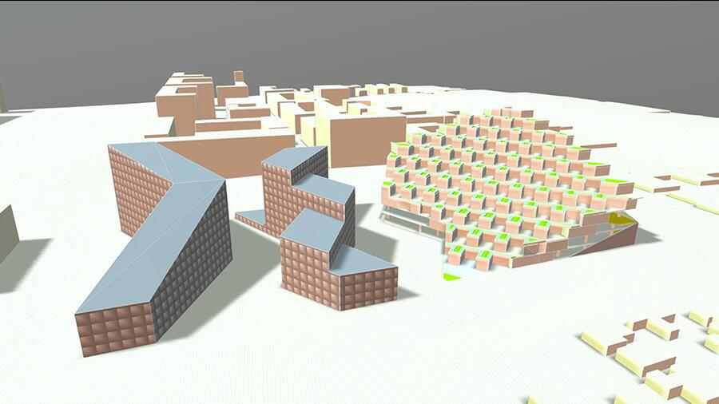

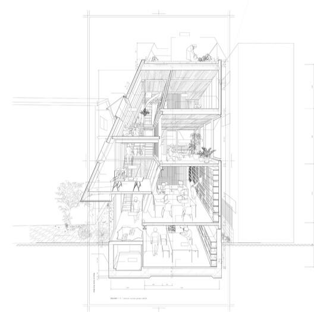
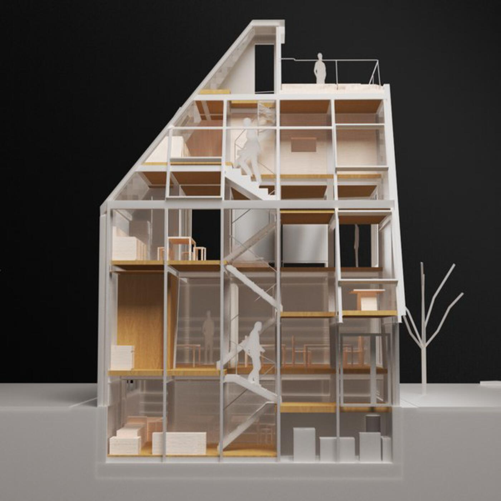
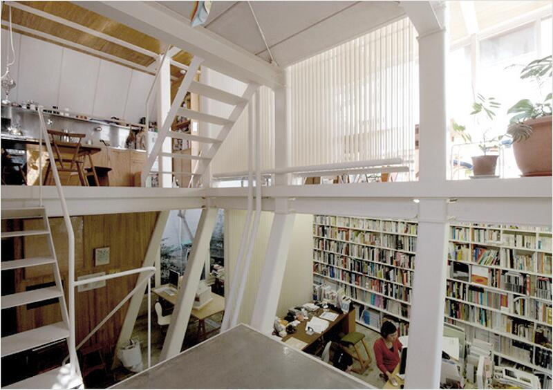
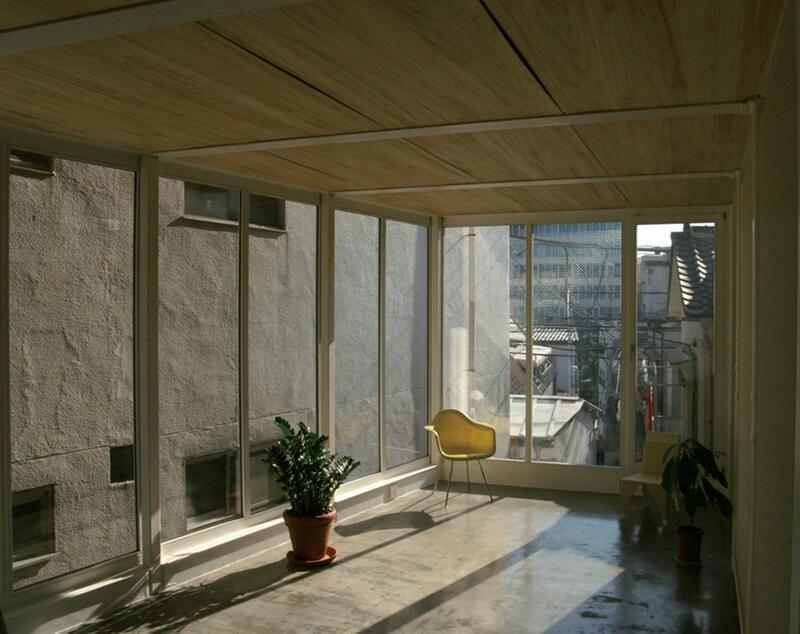
La House & Atelier Bow-Wow costituisce uno dei casi più efficaci per comprendere l’assonometria come strumento critico di verifica della coerenza tridimensionale del progetto.
Inserito in un micro-lotto di Tokyo, l’edificio nasce da una condizione estrema che obbliga gli architetti a concepire lo spazio non come sequenza di ambienti distinti, ma come un organismo tridimensionale continuo, in cui funzioni domestiche e professionali si intrecciano in un unico campo spaziale.
L’assonometria utilizzata da Bow-Wow non ha carattere figurativo o illustrativo: funziona come una vera e propria radiografia del sistema. Il disegno rende simultaneamente leggibili:
- la sovrapposizione dei livelli senza una gerarchia compositiva rigida;
- le connessioni verticali intese come dispositivi di orientamento spaziale, più che come semplici elementi distributivi;
- la densità volumetrica prodotta da nicchie, cavità, ripiani e piattaforme;
- l’interdipendenza tra spazi di servizio e spazi serviti;
- la permeabilità tra ambiti privati e professionali come parte di un unico campo percettivo.
La House & Atelier Bow-Wow diventa così un caso paradigmatico per la Lezione 8, in cui l’assonometria si configura come test della logica tridimensionale del progetto. Il disegno rende visibile la struttura nascosta dell’architettura, la sintassi delle relazioni e l’intelligenza spaziale che consente di tenere insieme un campo complesso all’interno di uno spazio estremamente ridotto.
L’assonometria non rappresenta l’edificio: lo smonta e lo ricompone come sistema coerente di relazioni.

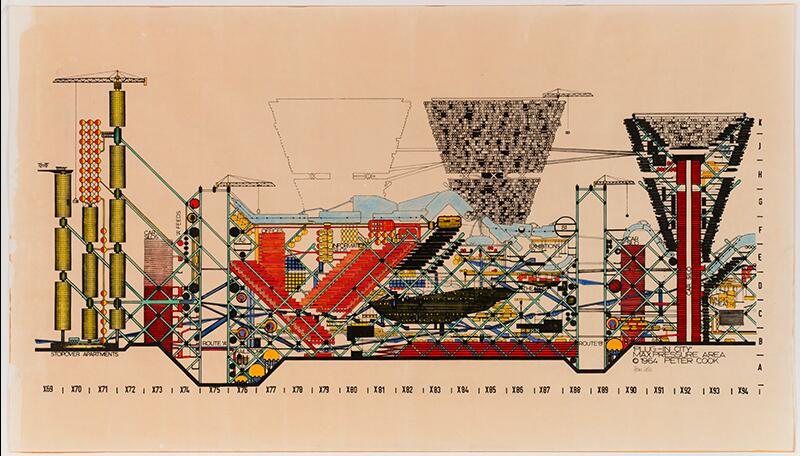
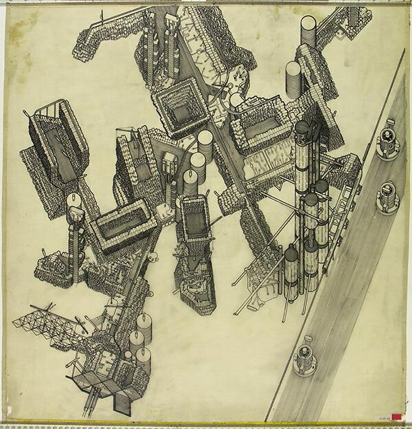
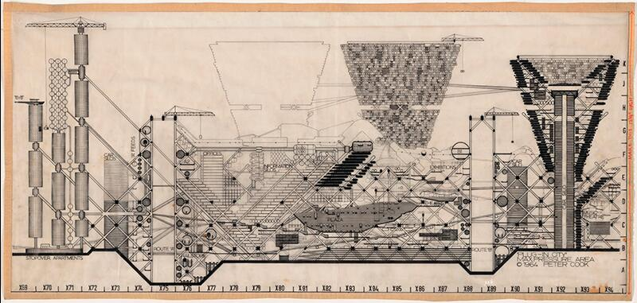
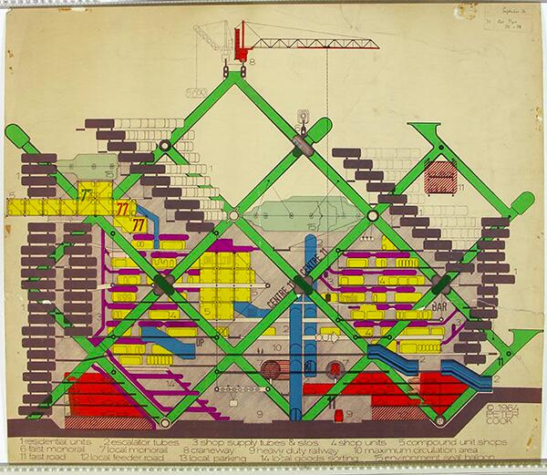
La Plug-In City di Archigram non è un progetto edilizio in senso convenzionale, ma un dispositivo concettuale che rende esplicito un principio fondamentale della progettazione contemporanea: l’architettura – e la città – come sistema di relazioni, non come somma di oggetti finiti.
L’assonometria non rappresenta una forma stabile, ma visualizza un campo complesso di componenti interdipendenti – capsule abitative, piattaforme, infrastrutture, nodi di servizio – la cui identità non risiede nella configurazione finale, bensì nella logica delle connessioni, delle sostituzioni e degli aggiornamenti possibili.
Il disegno assonometrico rende leggibile:
- una rete strutturale permanente che accoglie elementi temporanei;
- la variabilità di densità, posizione e aggregazione dei moduli;
- la reversibilità delle configurazioni come principio progettuale;
- la compresenza di flussi, infrastrutture e unità abitative in un unico campo operativo.
Dal punto di vista didattico, il progetto è centrale per la Lezione 8 perché chiarisce che la rappresentazione progettuale non deve descrivere oggetti, ma condizioni operative, interazioni e intensità. È la stessa logica che fonda la scheda sinottica: una mappa relazionale capace di mostrare come le variabili agiscono sul campo e ne modificano continuamente l’assetto.
In questo senso, Plug-In City anticipa una nozione di coerenza non formale ma sistemica: la stabilità del progetto non è nella forma, ma nella consistenza delle relazioni che ne governano la trasformazione.

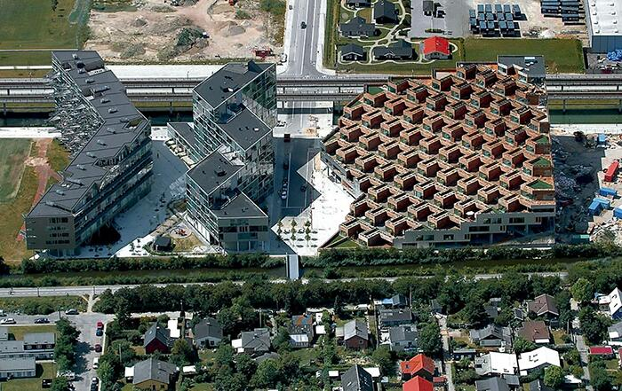
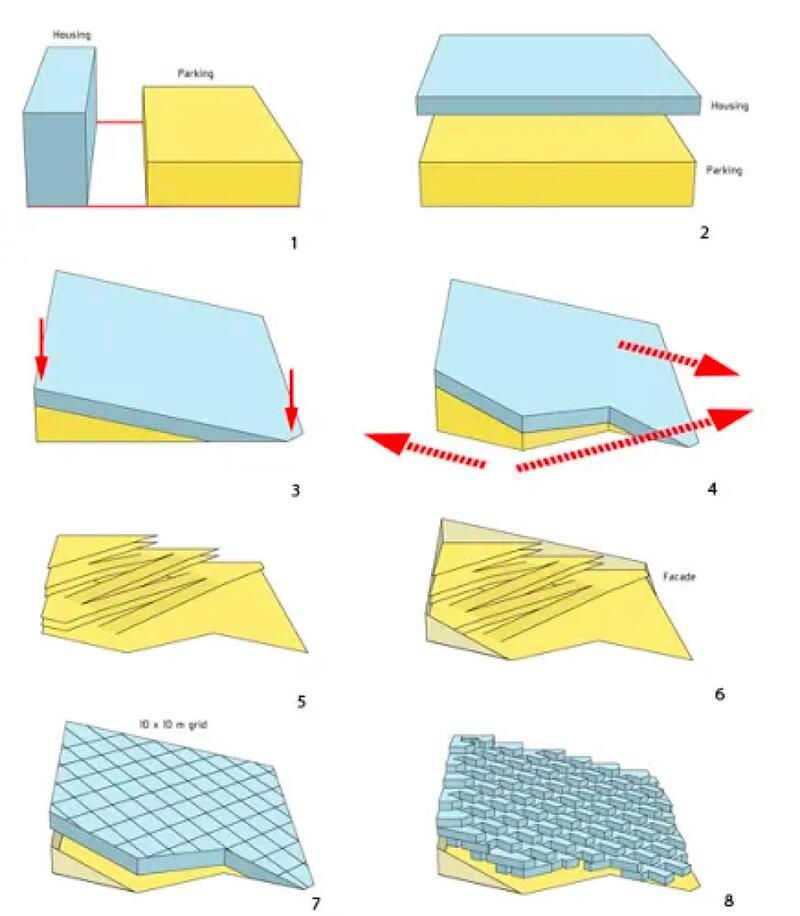
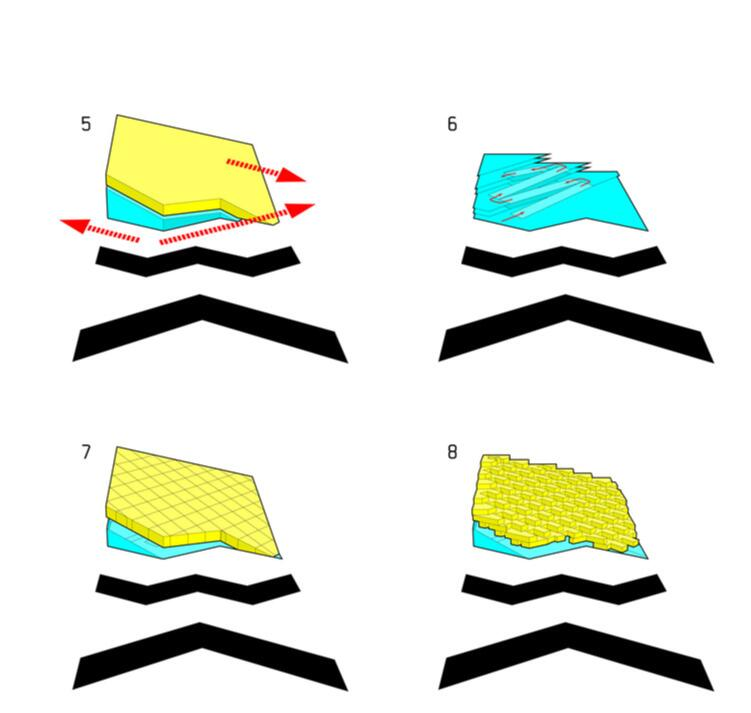
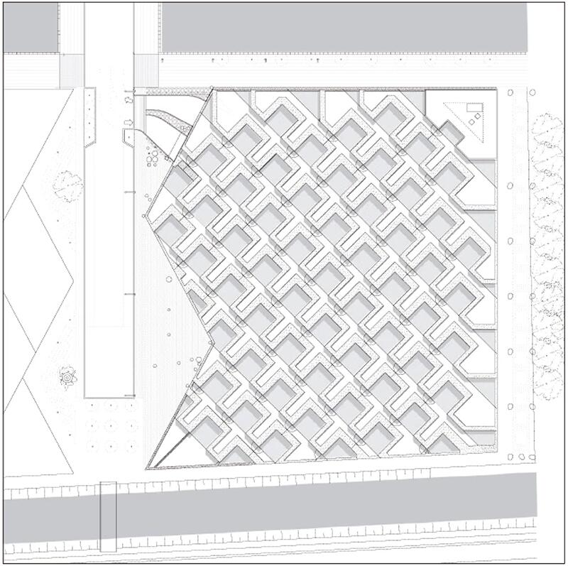
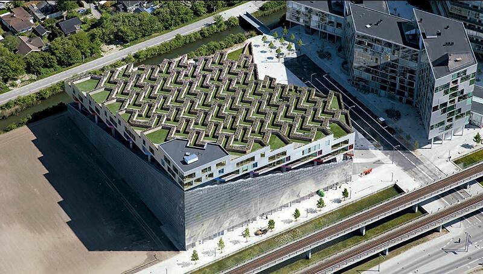
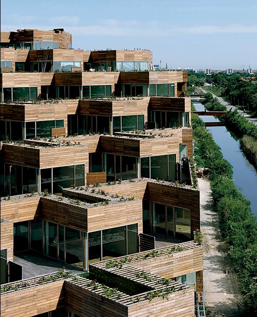
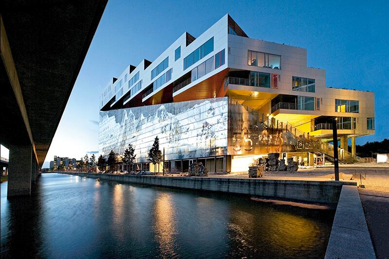
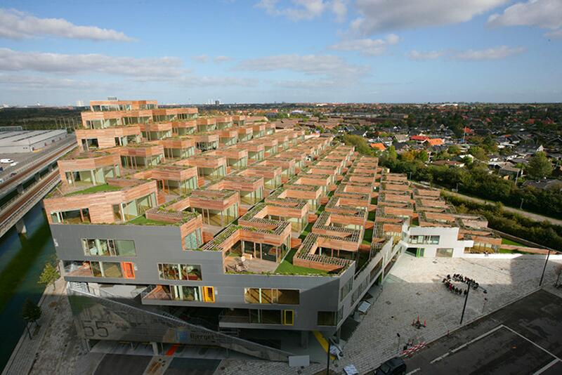
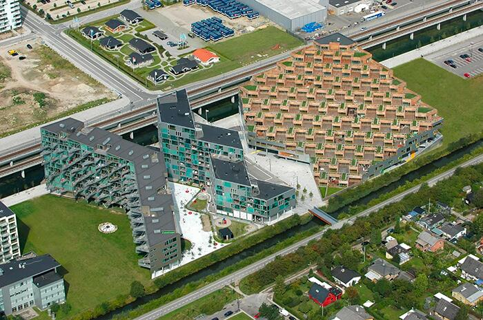
I Mountain Dwellings di BIG costituiscono uno dei casi contemporanei più chiari in cui l’assonometria non descrive un oggetto architettonico, ma rende leggibile un sistema complesso.
Il progetto combina due programmi radicalmente differenti — un’autorimessa di grandi dimensioni e un complesso residenziale — fondendoli in un unico organismo attraverso un dispositivo tipologico e spaziale preciso: una sezione in pendenza che trasforma l’edificio in una topografia artificiale abitata.
Nella rappresentazione assonometrica, la logica complessiva del progetto emerge con chiarezza. Il parcheggio si configura come una piattaforma infrastrutturale continua, modulare, assimilabile a un paesaggio tecnico sul quale si innesta il sistema residenziale. Gli alloggi si dispongono lungo una sequenza terrazzata che garantisce a ciascuna unità luce, affaccio e spazio aperto, trasformando una condizione infrastrutturale in un dispositivo abitativo.
L’edificio non può essere compreso come una semplice sovrapposizione di piani. È invece un sistema tridimensionale continuo, in cui topografia, percorsi, pendenze e flussi sono governati da un’unica logica generativa.
L’assonometria consente di verificare la coerenza interna di questo sistema: la continuità delle rampe, la relazione tra moduli strutturali e abitativi, l’organizzazione dei percorsi carrabili e pedonali, la costruzione simultanea di infrastruttura e paesaggio. Ciò che piante e sezioni isolate non riescono a restituire, l’assonometria lo rende evidente: il comportamento spaziale dell’edificio, la sua natura sistemica e la necessità delle sue relazioni interne.
Per la Lezione 8, i Mountain Dwellings sono esemplari perché mostrano come la forma architettonica non coincida con un volume, ma con una logica tridimensionale che si verifica pienamente solo attraverso l’assonometria. Il disegno rende visibile la struttura invisibile del progetto, il suo funzionamento e la sua coerenza.